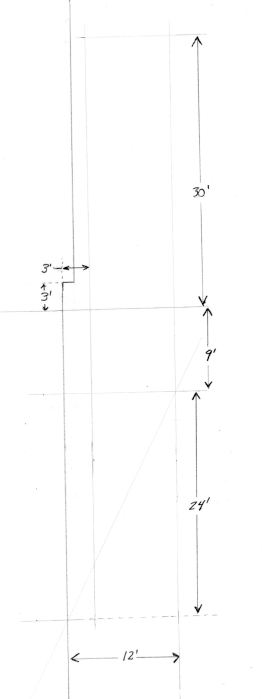

My goals for 405 W. Alexander St. are to serve as a good long term investment in one of my favorite neighborhoods and build a competitive property but provide slightly below market rates to quiet tenants near the submarine base. I am proud to share the improvements made and this page also records the expenses for analysis.
Based on rental prices in the area, the first six corrective measures/improvements togther are estimated to improve the rental quality by about $150/month, which is just a baseline for estimating an admittedly fuzzy ROI. Prices below do not factor in 7% sales tax.
I am a big fan of vertically stacked laundry and dryers, and no product epitomizes this like the GE Spacemaker. It was hard to get during Covid and the door to the laundry room and the existing cabinetry had to be removed to get it in, but ultimately this is going to reclaim space in this little 1160 ft2 home.
Kingsbay Drycleaners and 24 Hour Laundry Mat is conveniently located next to a McGarvey's Wee Pub but is too far away to walk. Assuming most apartments charge $50/month for a washer and dryer, this investment probably will have a positive ROI if there are no major maintenance issues for 3 years.
| GE Unitized Spacemaker | 967.49 | Sep.2021 |
| Power Cord | 025.00 | |
| Duct | 015.00 |
| Fix Toilet Handle/Arm Range of Motion | Toilet Handle | 15.00 |
| Replace Cheap Plastic Toilet Seat | Wood, metal toilet seat | 36.98 |
| Fix Kitchen Cabinet Doors | 8-32x1" machine screws | 2.30 |
| Fix shower faucet | Danco valley sink/shower handle | 11.68 |
The City of St. Marys attempts to maintain 50% tree coverage in its communities and historic district, which includes 405 W. Alexander St. Shade Trees of Georgia St. Marys Tree Removal Guidelines
| House and Power Line Overhang | Crews Timber Tree Service | 3200.00 | Dec.2021 |
The original single lane driveway feels right for this single family home but would be inconveniant for two or more relatively independent renters. The extension allows two vehicles to park easily without coordination and three to park with minimal coordination.
Construction was based on rules of thumb from Nitterhouse Masonry:
The first phase laid a usable subbase of gravel over a 522 ft2 area plus a runoff route. The second phase will finalize compaction, lay sand and traditional brick pavers over the gravel and potentially add a concrete paver tire lane.
|  | |
|
|
| #57 3/4" Crushed Concrete | 1517.86 | 20 tons | 2022-MAR |
| Stakes | 5.11 |
| Washing machine service box | 036.68 | |
| 2" PVC P-trap w/union | 012.26 | |
| 2" PVC 45° elbow | 004.40 | 2 |
| 2" PVC Combo T-Wye | 007.17 | |
| 2" PVC 5' | 10.00 |
| 5/8" x 10" Zinc Eye Bolt | 3 | 21.54 |
| 3/16" x 2" Zinc Eye Bolt | 3 | 10.35 |
| 20 ct 3/4" Flat Washer | x | 7.60 each |
| 2 oz 18GA 1" Wire Nails | 1 | 2.05 |
| 100 ct 8 x 1.25" Wood Screws | 1 | 4.93 |
| 25 ct 10 x 3" Wood Screws | 1 | 4.93 |
| Wall/Ceiling Mount Pulleys | 5 | 29.60 |
| 1/4"x2"x4' Poplar Board | 2 | 5.48 |
| 3/4"x3".5x4' Pine Board | 2 | 5.48 |
| 1x12x8' panel | 1 | 21.30 |
| Wood glue | 8 oz | 2.95 |
| Wood Stain | 7.25oz | 4.93 |
The attic was gross with old junk, worn paper and crumbling cardboard, ripe for bugs. It is hard to get around on the rafters due to the low pitch of the roof. Perhaps this is why the living room ceiling fan was so precariously mounted, held in place solely by rusting 1/16" wire wrapped around an ascanse 2x6.
The attic looks much better with all of the trash removed and a few extra studs and mixed 1/2 and 3/4" plywood installed for easier access to the central utilities despite the low pitch. I am happy to have found the lighting fixture deficiency before it found me, hopefully there are no other problems going unnoticed. On account of the lighting fixture alone, I consider the attic access improvement a good investment.
| 2x4"x8' studs | 38.75 | 5 |
| 3" deck screws | 8.53 | 1lb |
| 1x2"x8' studs | 7.84 | 4 |
| 3/4"x4x4' Plywood | 51.54 | 1 |
| 1.5" nails | 2.28 | |
| 1x3"x8' to mount ceiling fan | 2.95 | |
| ceiling fan mounting hardware | 2.23 |
| Mulch | 18.00 | 12ft3 | prevent poison ivy return |